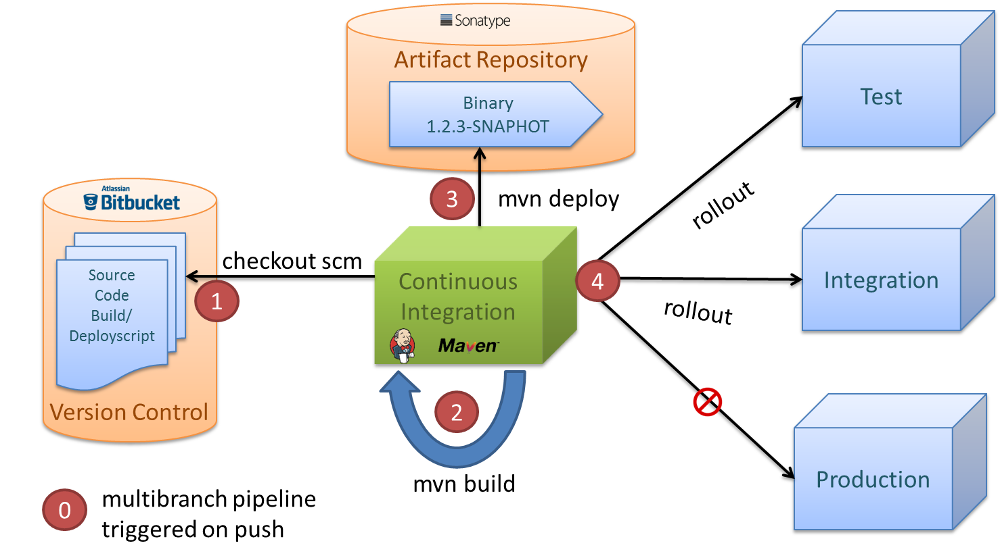
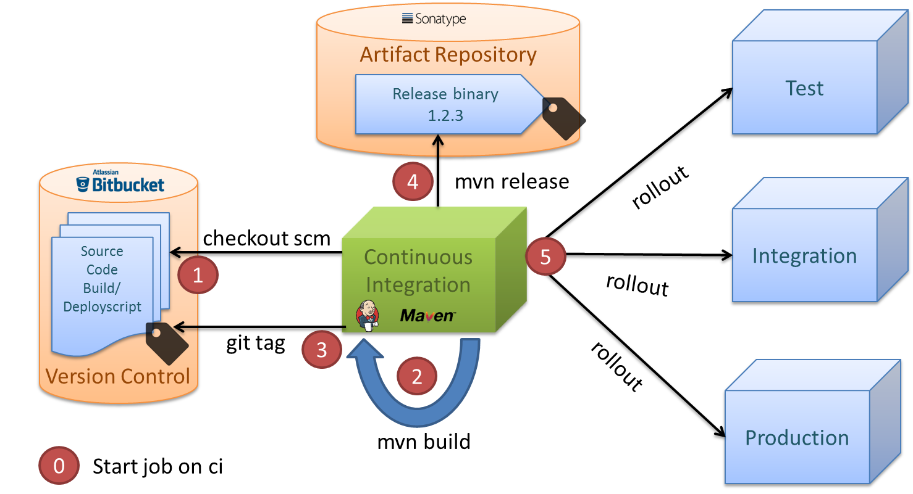

Continuous Delivery of JavaScript packages
- in an enterprise environment -
Joachim^2, Basel One - 16.10.2018
About us


About Baloise
NodeJS & NPM
node.js
- JavaScript runtime environment
- Server Scripting with JavaScript
- pretty widespread in nowadays, keyword: Full-Stack JS
npm
- node package manager
- a part of node.js (also installed together with the installer)
- comparable with maven for Java
package.json
- comparable to a maven pom.xml
- defines the version of the project and its dependencies
- own scripts can be added
package.json example
{
"name": "alk-cicd-javascript",
"version": "0.1.0",
"description": "talk about CICD with JS",
"scripts": {
"start": "grunt serve"
},
"dependencies": {
"express": "4.15.2",
"socket.io": "1.7.3"
},
"license": "MIT"
}
Our Continuous delivery
workflows for Java
Snapshot workflow for Java artifacts
Release workflow for Java artifacts
Our approach in Java
- not exactly semantic versioning ;-)
- SNAPSHOTS!
- not tagged
- not stable
- not reproducible
- easy for development
- built and published after every push on ci
Different versioning concepts in JavaScript
- alpha / beta prereleases
- semver as best practice
- prereleases are tagged and reproducible
- prereleases with npm-dist-tag next
- releases with npm-dist-tag latest
- only build and published locally and manually
Our solution
some picks from two worlds
- build and release happens on ci
- prereleases built and published on push
- semver to communicate changes on release
- immutable artifacts
- developer uses ci job to release major / minor / patch
CI live demo - Fallback


#2 Releasing, tagging
and publishing
Our approach in Java
- Release happens on ci
- build and publish to artifact repository
- artifact tagged in git -> immutable
Releasing in most JavaScript projects
- releasing and tagging manually and locally by a developer
- npm-dist-tag: -> latest
- published on npmjs.org
Our solution
- git tag on every release by ci
- npm-dist-tag: -> latest
- ci publishes to artifact repository
$ npm info @cicd/demo
#3 Self contained builds
Self contained builds
CI job configuration in GIT, no buildtools installed on ci
options {
disableConcurrentBuilds()
}
parameters {
choice(
choices: 'Major\nMinor\nPatch',
description: 'Which version?',
name: 'version'
)
}
stage('Example Build') {
node() {
checkout scm
npmInit()
npmRelease version: "${params.version}"
}
}
Our approach in Java
- build jobs defined in project groovy files, under version control
- maven installed on CI (currently)
- alternative: usage of gradle wrapper
- maven or gradle as dependency manager
Most javascript projects
- define which Node.js version you need
- container with installed version provided on ci
- use package.json to define dependencies
a big corporate enterprise
security, corporate proxy and governance
- not able to download any executables
- or NodeJS
- or archives
- or npm packages
- also: must ensure an immutable history of released artifacts
Artifact repository to the rescue!
- can download binaries and executables
- works perfectly as download manager ;-)
- has our own published packages
- works as proxy to the outside world -> npmjs.org
Our solution
No NodeJS installed on CI server
- a project defines its required NodeJS version
- that exact NodeJS version will be downloaded with maven
- gradle or maven can be used to define and download
- package.json used to define all dependencies
- npm packages are also downloaded through artifact repository
- download our JavaScript publish library with npm
Example using Frontend-Maven Plugin
<plugin>
<groupId>com.github.eirslett</groupId>
<artifactId>frontend-maven-plugin</artifactId>
<executions>
<execution>
<id>install node</id>
<goals>
<goal>install-node-and-npm</goal>
</goals>
<phase>generate-resources</phase>
</execution>
</executions>
<configuration>
<nodeVersion>v8.11.2</nodeVersion>
<nodeDownloadRoot>${nexusNodeJS}</nodeDownloadRoot>
</configuration>
</plugin>
#4 Standardized process
Standardized process and tools
Corporate Standard api built on best practices - freedom to adjust
Our approach in Java
- corporate wide maven api and workflow on CI
- fully customizable for teams
node {
stage('git checkout') {
checkout scm
}
stage('standard') {
mavenbuild()
}
stage('custom') {
mavenbuild
cmd: "clean install",
mavenArgs: "-DskipTest=true"
}
}
Our solution
node {
stage('git checkout') {
checkout scm
}
stage('standard') {
npmInit()
npmBuild()
npmRelease()
}
stage('custom') {
npmInit()
npmRun scriptName: "lint-ci"
npmRun scriptName: "test-ci"
npmRun scriptName: "build-prod"
npmRelease version: "major"
}
}
Documented in jenkins

Our Continuous delivery
workflows for JavaScript
Prerelease workflow for JavaScript artifacts
Release workflow for JavaScript artifacts
Challenges
Third party software
Dev & Ops gardens
DevOps mindchange
Learnings
- collect data from ci in a persistence store to feed a viewer
- artifacts are only retrieved from artifact repository (build once)
- learn from npm where snapshots are distinguishable -> branchname in version
- hide the differences between Java and JavaScript behind a facade
- stick to the common best practices of each ecosystem
- use semver!
- and...
The future
the future (1)
- security and license checks for npm packages -> IQ Server
- no maven installed on ci -> fetch temporary via artifact repository
- no need for maven or gradle to define and download nodejs version
- -> nodejs docker img?
the future (2)
- automatic changelog creation and version retrieval based on commit template
- prevent releasing of apps with beta packages as dependency
- open source publish library